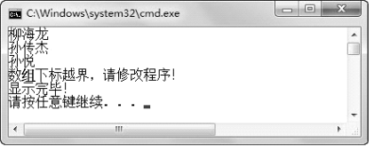
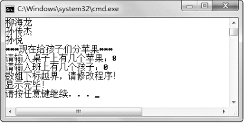
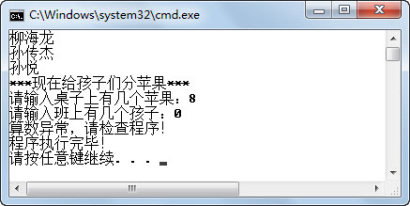
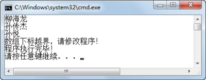
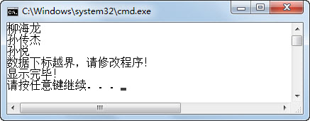

1.2 异常处理
所谓异常处理，就是发生异常之后，程序员要求程序该如何操作。
1.2.1 基本异常处理
Java对异常的处理采取的是抛出、捕获的机制，即由一段可能抛出异常的程序抛出异常（也可能正常执行，不抛出异常），在这段程序外有专门的异常处理程序进行处理，针对抛出的不同类型的异常捕获后进行处理，这就是Java异常处理机制。Java异常处理机制的语法形式如下：
try{
//可能抛出异常的语句块
}catch(SomeException1 e)// SomeException1特指某些异常，非Java中具体异常，下同
{
//当捕获到SomeException1类型的异常时执行的语句块
} catch(SomeException2 e)
{
//当捕获到SomeException2类型的异常时执行的语句块
}finally{
//无论是否发生异常都会执行的代码
}
接下来还是先从程序开始，看看如何编写异常处理程序。
public class TestEx5
{
public static void main(String[] args)
{
try{
String teachers[]={"柳海龙","孙传杰","孙悦"};
for(int i = 0;i < 4;i++){
System.out.println(teachers[i]);
}
}catch(Exception e)
{
System.out.println("数组下标越界，请修改程序！");
}
System.out.println("显示完毕！");
}
}
该程序中，将可能抛出异常的代码放在了try语句块里，使用catch语句对所有异常（因为异常类型是Exception）进行捕获。如发生异常则输出“数组下标越界，请修改程序！”并且不退出程序，继续执行异常后面的代码，程序运行结果如图1.6所示。

图1.6 try...catch...异常结构
如果try语句块中的代码不抛出异常，则执行完毕try语句块，catch语句块中的代码不被执行；如果try语句块抛出异常，则try语句块中发生异常后的代码将不再被执行，而由相应的catch语句进行捕获，catch语句块中的代码将会被执行。这里相应的catch语句是指，catch语句后面捕获异常声明的类型必须与try语句抛出异常的类型一致，或者是抛出异常类型的父类。
1.2.2 多个catch块
将上面的程序做如下修改：
（1）修改for循环的第二个表达式，由“i < 4”改成“i < teachers.length”，使该段程序不会抛出数组下标越界异常；
（2）将“给孩子们分苹果”的程序代码加入到本程序的try语句块中。
具体代码如下，编译、运行，输入苹果数为8，孩子数为0，观察程序运行结果，如图1.7所示。
import java.util.Scanner;
public class TestEx6
{
public static void main(String[] args)
{
try{
String teachers[]={"柳海龙","孙传杰","孙悦"};
for(int i = 0;i < teachers.length;i++){
System.out.println(teachers[i]);
}
int appleNum = 0; //苹果数
int stuNum = 0; //学生数
System.out.println("***现在给孩子们分苹果***");
Scanner input = new Scanner(System.in);
System.out.print("请输入桌子上有几个苹果：");
appleNum = input.nextInt();
System.out.print("请输入班上有几个孩子：");
stuNum = input.nextInt();
System.out.println("班上每个孩子分得多少苹果：" + appleNum/stuNum);
System.out.println("孩子们非常开心！");
}catch(Exception e)
{
System.out.println("数组下标越界，请修改程序！");
}
System.out.println("显示完毕！");
}
}

图1.7 异常处理中的问题
仔细观察程序运行结果会发现，程序中明明抛出的是除数为0的算数异常，但显示的却是“数组下标越界，请修改程序！”的内容。出现这个问题的原因是，该程序catch语句后面捕获的是Exception类型的异常，即捕获所有类型的异常，包括除数为0的算数异常，并在捕获后执行显示“数组下标越界，请修改程序！”的代码。接下来修改上面的代码，思路为在catch语句后，针对不同类型的异常，执行不同的异常处理程序，具体代码如下：
import java.util.Scanner;
public class TestEx7
{
public static void main(String[] args)
{
try{
String teachers[]={"柳海龙","孙传杰","孙悦"};
for(int i = 0;i < teachers.length;i++){ //可以将循环次数改回4，再次运行
System.out.println(teachers[i]);
}
//省略“给孩子们分苹果”程序的代码
}catch(ArrayIndexOutOfBoundsException e) //捕获数组下标越界异常
{
System.out.println("数组下标越界，请修改程序！");
}catch(ArithmeticException e) //捕获算数异常
{
System.out.println("算数异常，请检查程序！");
}
System.out.println("程序执行完毕！");
}
}
编译、运行程序，依然输入苹果数为8，孩子数为0，显示“算数异常，请检查程序！”，如图1.8所示。

图1.8 异常处理中多个catch语句一
将for循环中“i < teachers.length”改回“i < 4”，再次运行程序，显示“数组下标越界，请修改程序！”，如图1.9所示。这样处理的好处是，try语句块可能抛出不同类型的异常，catch语句根据异常类型的不同分别进行捕获，执行不同的异常处理程序，使异常的处理更加合理。

图1.9 异常处理中多个catch语句二
1.2.3 finally语句
接下来的案例是一个客户/服务器程序，其中使用的技术之前没有学习过，但案例中已经进行了注释，需要大家能够读懂并理解含义。在以后的学习、工作中，不是所有的技术我们之前都系统学习过，肯定会碰到新技术、新问题，这就需要我们一边学一边掌握。
import java.net.*; //导入Java网络包
import java.io.*; //导入I/O包
public class TestEx8
{
//声明服务器端套接字对象
public static ServerSocket ss = null;
//暂不理会throws IOException代码的含义，之后的课程会详细介绍
public static void main(String[] args) throws IOException
{
try {
//实例化服务器端套接字，服务器套接字等待请求通过网络传入
ss = new ServerSocket(5678); //其中5678为端口号
//侦听并接受此套接字的连接
Socket socket = ss.accept();
//省略其他代码
//当发生某种I/O异常时，抛出IOException异常
}catch (IOException e) {
//关闭此套接字
ss.close();
//省略其他代码
}
//省略其他代码
}
}
阅读程序，在try语句块中实例化出一个服务器端套接字并进行了处理，如果try语句块中出现IOException异常，则catch语句块进行捕获和处理，关闭这个服务器套接字，并执行其他操作。但如果程序没有抛出IOException异常，正常执行，则关闭服务器端套接字的代码将不会执行，这个套接字不会被关闭，而是继续占用系统资源，这并不是程序开发人员希望的。接下来使用finally语句块，保证无论是否发生异常，finally语句块中的代码总被执行，具体代码如下：
import java.net.*;
import java.io.*;
public class TestEx9
{
public static ServerSocket ss = null;
public static void main(String[] args) throws IOException
{
try {
ss = new ServerSocket(5678);
Socket socket = ss.accept();
//省略其他代码
}catch (IOException e) {
//省略其他代码
}finally{
//关闭此套接字
ss.close();
}
//省略其他代码
}
}
使用finally语句块，保证了不论try语句块中是否出现异常，finally语句块中的代码都会被执行。本例中服务器端套接字ss对象都会被关闭。
在try…catch…finally异常处理结构中，try语句块是必须的，catch和finally语句块均为可选，但两个语句块中至少出现一个。
也许有人会有这样的疑问，如果在try语句块中或者catch语句块中存在return语句，finally语句块中的代码还会执行吗？不是说return语句的作用是将结果返回给调用者，而不再执行return语句后面的代码吗！Java异常处理机制对这个问题的处理是，当try或catch语句块中有return语句时，执行try或catch语句块中return语句之前的代码，再执行finally语句块中的代码，之后再返回。所以，即使在try或catch语句块中有return语句，finally语句块中的代码仍然会被执行。
在异常处理结构中，finally语句块不执行的唯一一种情况就是在catch语句中出现System.exit(1)的代码，则直接退出JVM，finally语句块不再执行。接下来通过修改数组下标越界的案例来进行一下验证，具体代码如下：
public class TestEx10
{
public static void main(String[] args)
{
try{
String teachers[]={"柳海龙","孙传杰","孙悦"};
for(int i = 0;i < 4;i++){
System.out.println(teachers[i]);
}
}catch(Exception e)
{
System.out.println("数组下标越界，请修改程序！");
//return; // finally语句块仍然执行
//System.exit(1); //直接退出JVM，finally语句块不再执行
}finally{
System.out.println("显示完毕！");
}
}
}
编译、运行该程序，运行结果如图1.10所示。

图1.10 finally语句块的使用一
删除return;语句前的“//”，编译、运行该程序，发现finally语句块中的代码仍然会被执行，显示出“显示完毕！”的内容，运行结果如图1.11所示。

图1.11 finally语句块的使用二
注释掉return;语句，删除System.exit(1);语句前的“//”，编译、运行该程序，发现直接退出JVM，finally语句块中的代码不再被执行，运行结果如图1.12所示。

图1.12 finally语句块的使用三